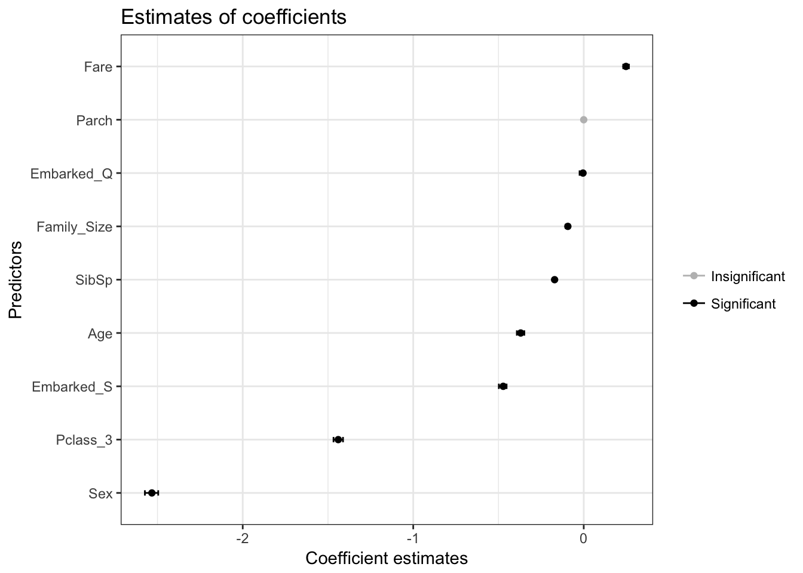
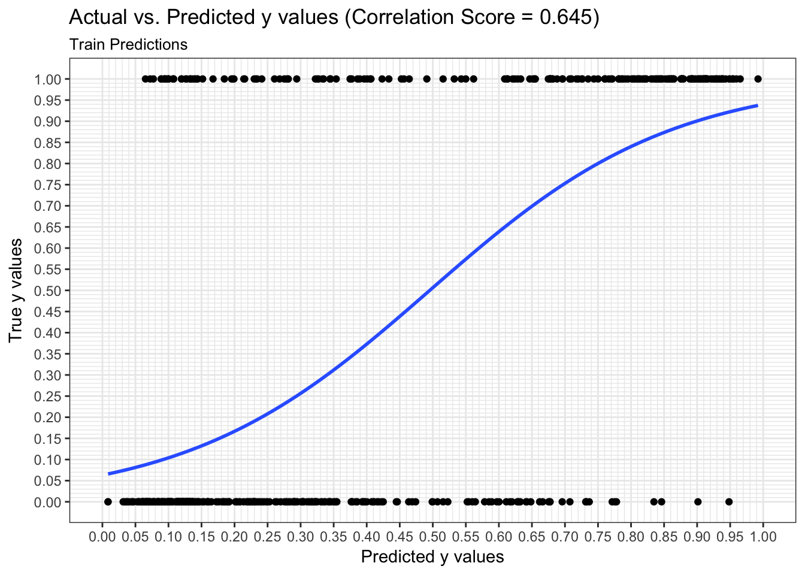
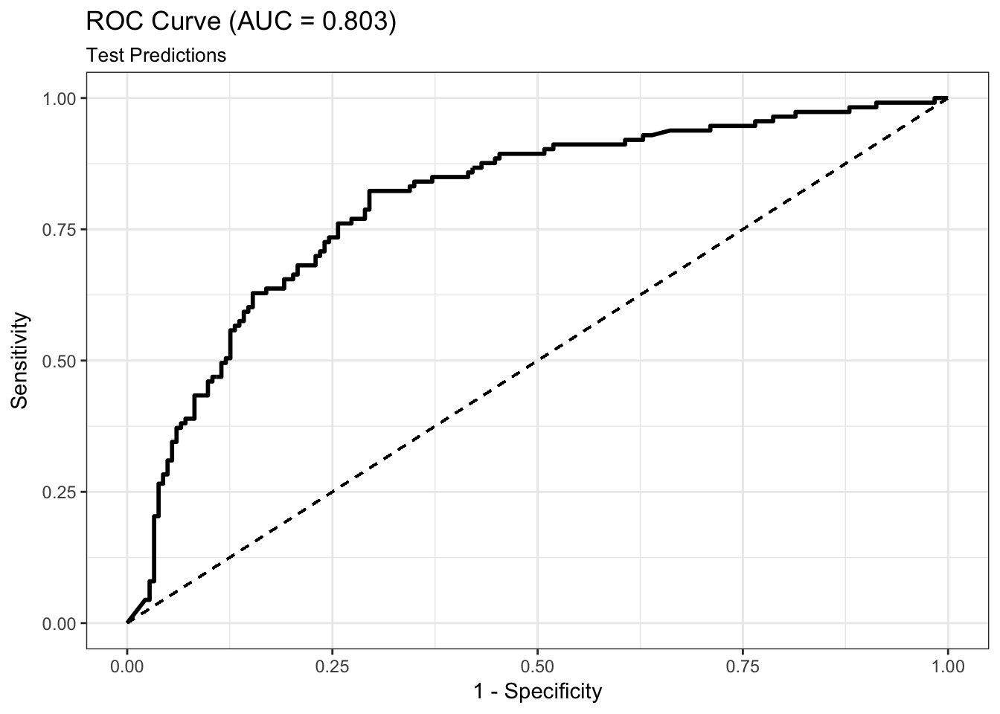
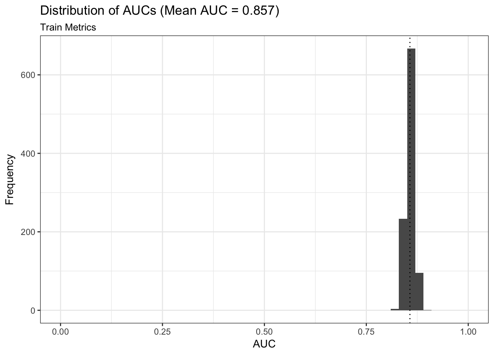
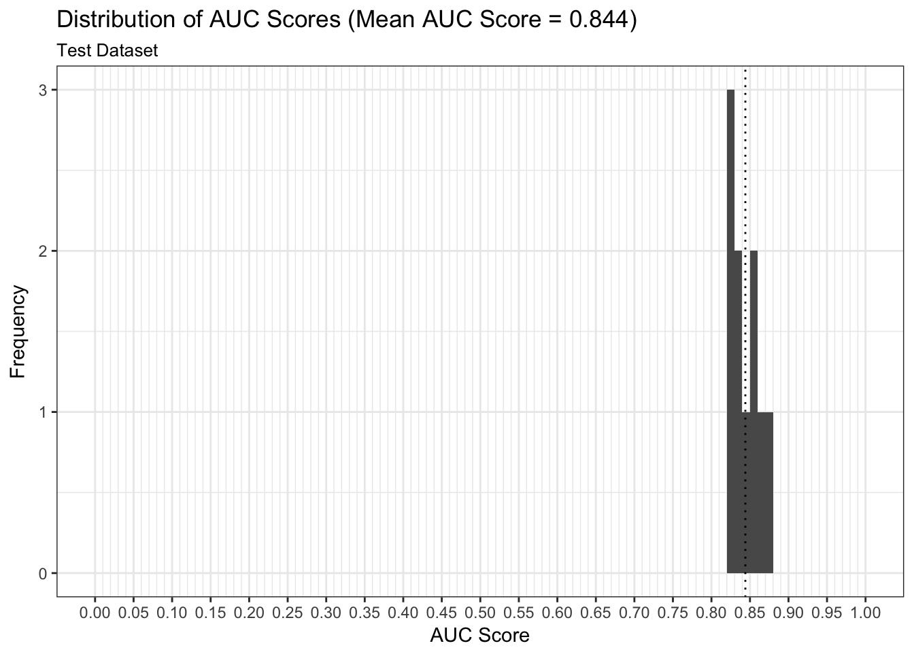

Install the titanic package from CRAN. This package contains datasets providing information on the fate of passengers on the fatal maiden voyage of the ocean liner “Titanic”, with variables such as economic status (class), sex, age and survival. These data sets are often used as an introduction to machine learning on Kaggle. More details about the dataset can be found there.
library(easyml)## Loaded easyml 0.1.0. Also loading ggplot2.## Loading required namespace: ggplot2library(titanic)
library(dplyr)##
## Attaching package: 'dplyr'## The following objects are masked from 'package:stats':
##
## filter, lag## The following objects are masked from 'package:base':
##
## intersect, setdiff, setequal, unionlibrary(ggplot2)
data("titanic_train", package = "titanic")
knitr::kable(head(titanic_train))| PassengerId | Survived | Pclass | Name | Sex | Age | SibSp | Parch | Ticket | Fare | Cabin | Embarked |
|---|---|---|---|---|---|---|---|---|---|---|---|
| 1 | 0 | 3 | Braund, Mr. Owen Harris | male | 22 | 1 | 0 | A/5 21171 | 7.2500 | S | |
| 2 | 1 | 1 | Cumings, Mrs. John Bradley (Florence Briggs Thayer) | female | 38 | 1 | 0 | PC 17599 | 71.2833 | C85 | C |
| 3 | 1 | 3 | Heikkinen, Miss. Laina | female | 26 | 0 | 0 | STON/O2. 3101282 | 7.9250 | S | |
| 4 | 1 | 1 | Futrelle, Mrs. Jacques Heath (Lily May Peel) | female | 35 | 1 | 0 | 113803 | 53.1000 | C123 | S |
| 5 | 0 | 3 | Allen, Mr. William Henry | male | 35 | 0 | 0 | 373450 | 8.0500 | S | |
| 6 | 0 | 3 | Moran, Mr. James | male | NA | 0 | 0 | 330877 | 8.4583 | Q |
To prepare the data for modeling, we will undergo the following steps:
Embarked is NA,SibSp, Parch, and 1L to estimate family size,Age is NA.titanic_train_2 <- titanic_train %>%
filter(!is.na(Embarked), Embarked != "") %>%
mutate(Family_Size = SibSp + Parch + 1L) %>%
mutate(Pclass = as.character(Pclass)) %>%
mutate(Pclass_3 = 1 * (Pclass == "3")) %>%
mutate(Sex = 1 * (Sex == "male")) %>%
mutate(Embarked_Q = 1 * (Embarked == "Q")) %>%
mutate(Embarked_S = 1 * (Embarked == "S")) %>%
mutate(Age = ifelse(is.na(Age), mean(Age, na.rm = TRUE), Age))To run an easy_glmnet model, we pass in the following parameters:
titanic_train_2,Survived,gaussian or a binomial model,preprocess_scale to scale the data,preprocess_scale is used,.exclude_variables <- c("PassengerId", "Pclass", "Name",
"Ticket", "Cabin", "Embarked")
.categorical_variables <- c("Sex", "SibSp", "Parch", "Family_Size",
"Pclass_3", "Embarked_Q", "Embarked_S")
results <- easy_glmnet(titanic_train_2, "Survived",
family = "binomial",
preprocess = preprocess_scale,
exclude_variables = .exclude_variables,
categorical_variables = .categorical_variables,
random_state = 12345, progress_bar = FALSE,
n_samples = 10, n_divisions = 10,
n_iterations = 2, n_core = 1)Now let’s assess the results of the easy_glmnet model.
We can interpret the weights in the following way:
Fare increases the log-odds of survival by 0.14 units,Age decreases the log-odds of survival by 0.47 units,results$plot_coefficients
output <- results$coefficients_processed
knitr::kable(output[nrow(output):1, ], digits = 2)| predictor | mean | sd | lower_bound | upper_bound | survival | sig | dot_color_1 | dot_color_2 | dot_color | |
|---|---|---|---|---|---|---|---|---|---|---|
| 9 | Fare | 0.25 | 0.01 | 0.23 | 0.27 | 1 | 1 | 1 | 2 | 2 |
| 8 | Age | -0.37 | 0.01 | -0.39 | -0.35 | 1 | 1 | 1 | 2 | 2 |
| 7 | Embarked_S | -0.47 | 0.01 | -0.50 | -0.45 | 1 | 1 | 1 | 2 | 2 |
| 6 | Embarked_Q | 0.00 | 0.01 | -0.02 | 0.00 | 1 | 1 | 1 | 2 | 2 |
| 5 | Pclass_3 | -1.44 | 0.02 | -1.47 | -1.41 | 1 | 1 | 1 | 2 | 2 |
| 4 | Family_Size | -0.09 | 0.01 | -0.11 | -0.08 | 1 | 1 | 1 | 2 | 2 |
| 3 | Parch | 0.00 | 0.00 | 0.00 | 0.00 | 0 | 0 | 0 | 1 | 0 |
| 2 | SibSp | -0.17 | 0.01 | -0.18 | -0.16 | 1 | 1 | 1 | 2 | 2 |
| 1 | Sex | -2.53 | 0.03 | -2.57 | -2.50 | 1 | 1 | 1 | 2 | 2 |
We can examine both the in-sample and out-of-sample ROC curve plots for one particular trian-test split determined by the random state and determine the Area Under the Curve (AUC) as a goodness of fit metric. Here, we see that the in-sample AUC is higher than the out-of-sample AUC, but that both metrics indicate the model fits relatively well.
results$plot_predictions_single_train_test_split_train
results$plot_predictions_single_train_test_split_test
We can examine both the in-sample and out-of-sample AUC metrics for n_divisions train-test splits (ususally defaults to 1,000). Again, we see that the in-sample AUC is higher than the out-of-sample AUC, but that both metrics indicate the model fits relatively well.
results$plot_model_performance_train
results$plot_model_performance_test
In this vignette we used easyml to easily build and evaluate a penalized binomial regression model to assess the likelihood of passenger surival given a number of attributes. We can continue to finetune the model and identify the most optimal alpha/lambda hyperparameter combination; however, our estimates of the weights make intutive sense and a mean out-of-sample AUC of 0.85 right off the bat is indicative of a good model.